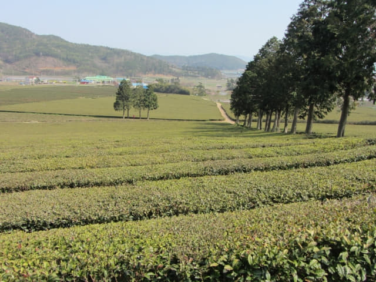
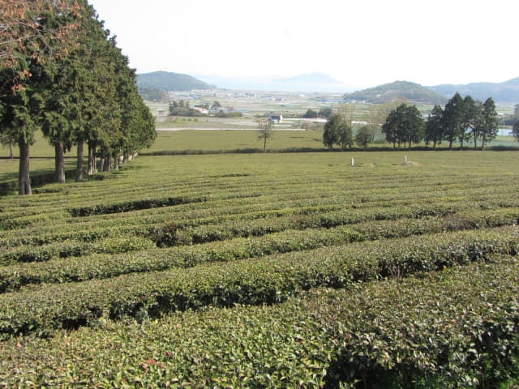
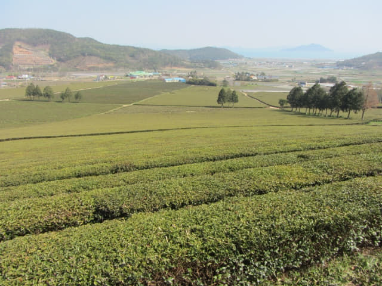
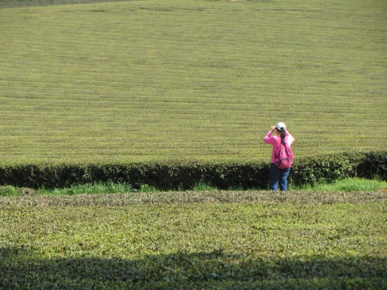

4.8.2017 (星期六)
在計劃這韓國南部之旅的行程時, 一直掙扎應否前往寶城(보성 Boseon), 如果是順路, 倒可以考慮, 但可惜從海南乘巴士往順天時, 不肯定巴士會否在寶城停站, 結果錯過了順道遊覽這最佳路線。因寶城只有寶城大韓茶園(대한다원 Boseong Dawon Green Tea Field)這一個景點, 如果從順天前往, 單是交通, 來回差不多要三小時, 車費也不便宜, 在經濟效益和時間效益的角度來看, 確實有些「不化算」, 除非….. 除非…….附近還有多一個很吸引的景點, 來增加這路線的價值和吸引力, 這才可以考慮。
寶城大韓茶園附近會不會還有吸引的景點? 搜尋網上旅遊資料, 寶城好像來來去去都只有寶城大韓茶園這一個景點, 唯有打開地圖仔細搜尋: 栗浦 (율포)、栗浦松田海邊 (율포솔밭해변)、……, 都是沒什麼特別, 看來寶城真的沒有其他值得去的地方。其實當時頗失望的, 寶城這麼大的地方, 真的只有寶城大韓茶園這一個景點? 沒可能的! 沒可能的! 我就是要發掘出多一個寶城的新景點! 就是基於這鬥氣心態, 再打開地圖, 更仔細、更仔細的搜尋, 結果發現離寶城大韓茶園不太遠的地方還有另一個茶園, 這就是「寶城大韓茶園．第二茶園」。
發現了「寶城大韓茶園．第二茶園」這新景點, 接著當然嘗試搜尋網上有關的旅遊資料, 結果是…… 沒有的! 哈哈~~~ 正合我意, 這證明真是一個非常冷門的地方, 肯定沒有什麼遊客, 說不定是一個秘景!
就是基於這理由, 最後決定前往寶城, 目的地是熱門的寶城大韓茶園, 當然還有最期望可能是秘景的「寶城大韓茶園．第二茶園」。
結果呢? 「寶城大韓茶園．第二茶園」的風景真是很美、很寧靜, 絕對沒有令我們失望; 和我們預料一樣, 茶園內半個旅客也沒有, 其實半個工作人員也沒有, 我個人認為比熱門的寶城大韓茶園優美不知多少倍, 不枉此行! 但有意前往的朋友要留意, 其實我們不清楚「寶城大韓茶園．第二茶園」是否開放給旅客參觀的, 入口處有一個應該是禁止進入的閘門, 我們看不懂閘門上的韓文, 不知是什麼意思, 看見沒有人, 便戰戰兢兢的從閘門旁走進茶園。
和大自然和大自然融合一起的茶園, 半個旅客也沒有, 一片寧靜。


綠油油遼闊的茶園, 遠處是如輕煙般的藍色大海, 風景非常優美。


整個茶園只有我們兩個, 太奢侈了。

「寶城大韓茶園．第二茶園」影片。